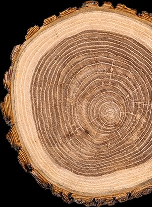
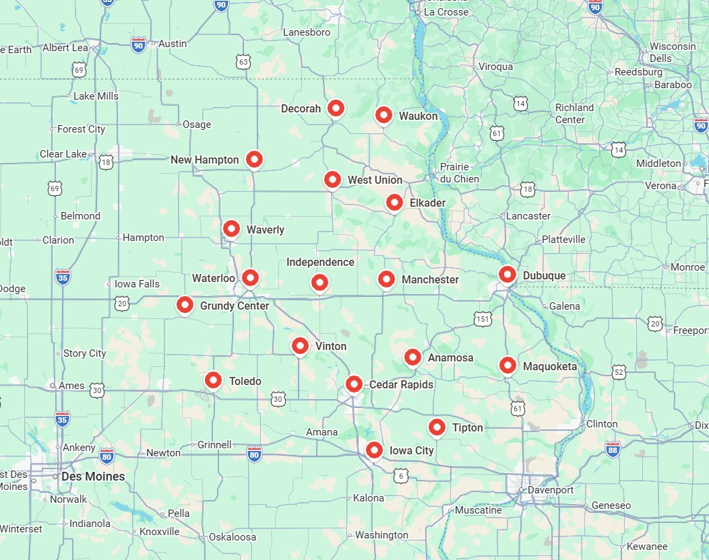

OnlyStumps provides stump grinding and removal throughout Chickasaw County and the New Hampton area. We grind stumps to at least 6" deep, remove raised roots, and offer optional cleanup so you only pay for what you need.

Nearby

Free estimate
Tell us how many stumps you have, where they are, and roughly how wide each one is. We'll follow up with a quote — usually the same day.